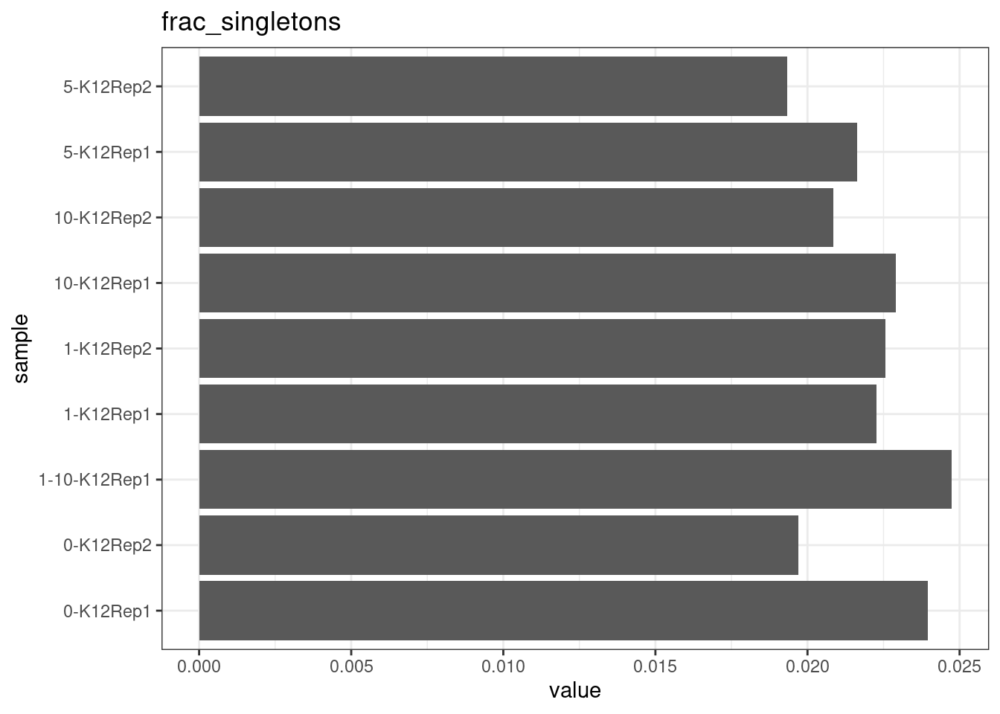
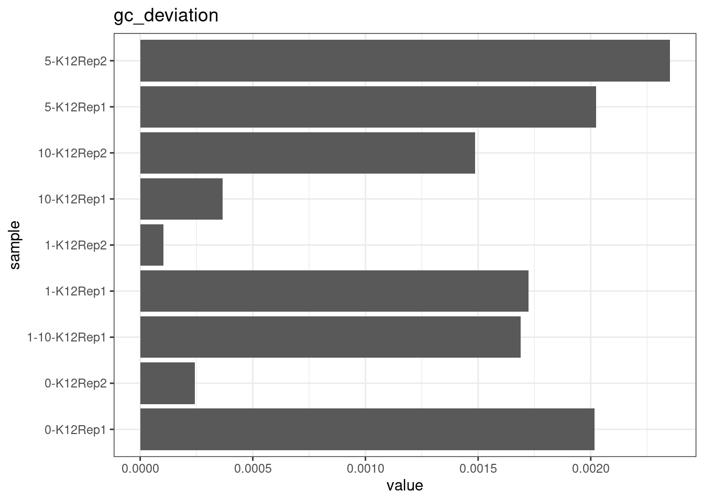
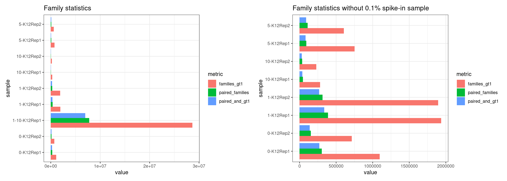

E coli spike-in experiments
Last updated: 2022-07-12
Checks: 7 0
Knit directory: rare-mutation-detection/
This reproducible R Markdown analysis was created with workflowr (version 1.6.2). The Checks tab describes the reproducibility checks that were applied when the results were created. The Past versions tab lists the development history.
Great! Since the R Markdown file has been committed to the Git repository, you know the exact version of the code that produced these results.
Great job! The global environment was empty. Objects defined in the global environment can affect the analysis in your R Markdown file in unknown ways. For reproduciblity it’s best to always run the code in an empty environment.
The command set.seed(20210916) was run prior to running
the code in the R Markdown file. Setting a seed ensures that any results
that rely on randomness, e.g. subsampling or permutations, are
reproducible.
Great job! Recording the operating system, R version, and package versions is critical for reproducibility.
Nice! There were no cached chunks for this analysis, so you can be confident that you successfully produced the results during this run.
Great job! Using relative paths to the files within your workflowr project makes it easier to run your code on other machines.
Great! You are using Git for version control. Tracking code development and connecting the code version to the results is critical for reproducibility.
The results in this page were generated with repository version 2ec3680. See the Past versions tab to see a history of the changes made to the R Markdown and HTML files.
Note that you need to be careful to ensure that all relevant files for
the analysis have been committed to Git prior to generating the results
(you can use wflow_publish or
wflow_git_commit). workflowr only checks the R Markdown
file, but you know if there are other scripts or data files that it
depends on. Below is the status of the Git repository when the results
were generated:
Ignored files:
Ignored: .DS_Store
Ignored: .Rapp.history
Ignored: .Rhistory
Ignored: .Rproj.user/
Ignored: analysis/.DS_Store
Ignored: scripts/
Untracked files:
Untracked: ._.DS_Store
Untracked: DOCNAME
Untracked: analysis/._.DS_Store
Untracked: analysis/cache/
Untracked: analysis/calc_nanoseq_metrics.Rmd
Untracked: data/._metrics.rds
Untracked: data/ecoli/
Untracked: data/metadata/
Untracked: data/metrics_efficiency_nossc.rds
Untracked: data/mixtures
Untracked: data/ref/
Untracked: prototype_code/
Unstaged changes:
Modified: analysis/ecoli_K12.Rmd
Note that any generated files, e.g. HTML, png, CSS, etc., are not included in this status report because it is ok for generated content to have uncommitted changes.
These are the previous versions of the repository in which changes were
made to the R Markdown (analysis/ecoli_spikeins.Rmd) and
HTML (docs/ecoli_spikeins.html) files. If you’ve configured
a remote Git repository (see ?wflow_git_remote), click on
the hyperlinks in the table below to view the files as they were in that
past version.
| File | Version | Author | Date | Message |
|---|---|---|---|---|
| Rmd | 2ec3680 | Marek Cmero | 2022-07-12 | Added preliminary QC results/metrics from spike-in experiments |
E coli spike-in experiment results
E coli K12 strain was spiked into E coli BL21 with different proportions:
| Lib Name | Spike in % | ~Cell equivalent* |
|---|---|---|
| 0-K12Rep1 | 0%K12Rep1(BL2 only) | 318 |
| 0-K12Rep2 | 0%K12Rep2 (BL2 only) | 202 |
| 1-K12Rep1 | 1%K12Rep1 | 601 |
| 1-K12Rep2 | 1%K12Rep2 | 585 |
| 10-K12Rep1 | 10%K12Rep1 | 86 |
| 10-K12Rep2 | 10%K12Rep2 | 74 |
| 1_10-K12Rep1 | 0.1%K12Rep1 | 11,139 |
| 5-K12Rep1 | 5%K12Rep1 | 188 |
| 5-K12Rep2 | 5%K12Rep2 | 228 |
*based on R1 unique read number.
The 1_10-K12Rep1 sample is currently omitted in this analysis as it is too large to process with the existing script.
MultiQC reports:
library(ggplot2)
library(data.table)
library(dplyr)
library(here)
library(tibble)
library(stringr)
library(Rsamtools)
library(GenomicRanges)
library(seqinr)
library(parallel)
library(readxl)
library(patchwork)
library(RColorBrewer)
library(UpSetR)
library(vcfR)source(here('code/load_data.R'))
source(here('code/plot.R'))
source(here('code/efficiency_nanoseq_functions.R'))genome_max <- 4528118
cores <- 8genomeFile <- here('data/ref/Escherichia_coli_strain_BL21_TaKaRa.fasta')
rinfo_dir <- here('data/ecoli/AGRF_CAGRF220410419_HFVGHDSX3/QC/read_info')
markdup_dir <- here('data/ecoli/AGRF_CAGRF220410419_HFVGHDSX3/QC/mark_duplicates')
qualimap_dir <- here('data/ecoli/AGRF_CAGRF220410419_HFVGHDSX3/QC/qualimap')
qualimap_cons_dir <- here('data/ecoli/AGRF_CAGRF220410419_HFVGHDSX3/QC/consensus/qualimap')
variant_dir <- here('data/ecoli/AGRF_CAGRF220410419_HFVGHDSX3/variants')sample_names <- list.files(rinfo_dir) %>%
str_split('\\.txt.gz') %>%
lapply(., dplyr::first) %>%
unlist() %>%
str_split('_') %>%
lapply(., head, 2) %>%
lapply(., paste, collapse='-') %>%
unlist()
# load variant data
var_df <- load_variants(variant_dir, sample_names)
# load and fetch duplicate rate from MarkDuplicates output
mdup <- load_markdup_data(markdup_dir, sample_names)
# get mean coverage for pre and post-consensus reads
# filter out 1-10-K12Rep1 for now
qmap_cov <- list.files(
qualimap_dir,
full.names = TRUE,
recursive = TRUE,
pattern = 'genome_results.txt') %>%
lapply(., function(x){if(!x %like% '1-10-K12Rep1'){x}}) %>% unlist() %>%
lapply(., read.delim)
for (i in seq(length(sample_names))) {
qmap_cov[[i]]$Sample <- sample_names[i]
}
qmap_cov <- rbindlist(qmap_cov)
qmap_cov <- qmap_cov[qmap_cov$BamQC.report %like% 'mean cov',]
qmap_cov$coverage <-
str_split(qmap_cov$BamQC.report, ' = ') %>%
lapply(., last) %>%
unlist() %>%
gsub('X|,', '', .) %>%
lapply(., as.numeric) %>%
unlist()
qmap_cov <- qmap_cov[,c('Sample', 'coverage')]
qmap_cov_cons <- list.files(
qualimap_cons_dir,
full.names = TRUE,
recursive = TRUE,
pattern = 'genome_results.txt') %>%
lapply(., function(x){if(!x %like% '1-10-K12Rep1'){x}}) %>% unlist() %>%
lapply(., read.delim)
for (i in seq(length(sample_names))) {
qmap_cov_cons[[i]]$Sample <- sample_names[i]
}
qmap_cov_cons <- rbindlist(qmap_cov_cons)
qmap_cov_cons <- qmap_cov_cons[qmap_cov_cons$BamQC.report %like% 'mean cov',]
qmap_cov_cons$coverage <-
str_split(qmap_cov_cons$BamQC.report, ' = ') %>%
lapply(., last) %>%
unlist() %>%
gsub('X|,', '', .) %>%
lapply(., as.numeric) %>%
unlist()
qmap_cov_cons <- qmap_cov_cons[,c('Sample', 'coverage')]
# uncomment below to calculate metrics
# calculate metrics for nanoseq
rlen <- 151; skips <- 5
metrics <- calc_metrics_new_rbs(rinfo_dir, cores = cores) %>% bind_rows()
metrics$duplicate_rate <- as.numeric(mdup)
metrics$duplex_coverage_ratio <- qmap_cov$coverage / qmap_cov_cons$coverage
metrics$duplex_coverage_ratio[qmap_cov_cons$coverage < 1] <- 0 # fix when < 1 duplex cov
metrics$sample <- gsub('-HFVGHDSX3', '', sample_names)
# cache metrics object
# saveRDS(metrics, file = here('data/metrics.rds'))
# prepare for plotting
mm <- data.frame(melt(metrics))
colnames(mm)[2] <- 'metric'ggplot(mm, aes(sample, value)) +
geom_point() +
theme_bw() +
theme(axis.text.x = element_text(angle = 90)) +
facet_wrap(~metric, scales = 'free') +
scale_colour_brewer(palette = 'Dark2')
Metric comparison plots
Duplicate rate
Fraction of duplicate reads calculated by Picard’s MarkDuplicates. This is based on barcode-aware aligned duplicates mapping to the same 5’ positions for both read pairs. The NanoSeq Analysis pipeline states the optimal empirical duplicate rate is 75-76% (marked in the plot).
metric <- 'duplicate_rate'
ggplot(mm[mm$metric == metric,], aes(sample, value)) +
geom_histogram(stat = 'identity', position = 'dodge') +
theme_bw() +
coord_flip() +
geom_hline(yintercept = c(0.75, 0.76), alpha = 0.4) +
ggtitle(metric)
Fraction of singleton reads
Shows the number of single-read families divided by the total number of reads. As suggested by Stoler et al. 2016, this metric can server as a proxy for error rate, as (uncorrected) barcode mismatches will manifest as single-read families. The lower the fraction of singletons, the better.
metric <- 'frac_singletons'
ggplot(mm[mm$metric == metric,], aes(sample, value)) +
geom_histogram(stat = 'identity', position = 'dodge') +
theme_bw() +
coord_flip() +
ggtitle(metric)
Drop-out rate
This is the same calculation as F-EFF in the NanoSeq Analysis pipeline:
“This shows the fraction of read bundles missing one of the two original strands beyond what would be expected under random sampling (assuming a binomial process). Good values are between 0.10-0.30, and larger values are likely due to DNA damage such as modified bases or internal nicks that prevent amplification of one of the two strands. Larger values do not impact the quality of the results, just reduce the efficiency of the protocol.”
This is similar to the singleton fraction, but taking into account loss of pairs due to sampling. The optimal range is shown by the lines.
metric <- 'drop_out_rate'
ggplot(mm[mm$metric == metric,], aes(sample, value)) +
geom_histogram(stat = 'identity', position = 'dodge') +
theme_bw() +
coord_flip() +
geom_hline(yintercept = c(0.1, 0.3), alpha = 0.4) +
ggtitle(metric)
Efficiency
Efficiency is the number of duplex bases divided by the number of sequenced bases. According the NanoSeq Analysis pipeline, this value is maximised at ~0.07 when duplicate rates and strand drop-outs are optimal.
metric <- 'efficiency'
ggplot(mm[mm$metric == metric,], aes(sample, value)) +
geom_histogram(stat = 'identity', position = 'dodge') +
theme_bw() +
coord_flip() +
geom_hline(yintercept = c(0.07), alpha = 0.4) +
ggtitle(metric)
GC deviation
GC deviation is the absolute difference between GC_BOTH
and GC_SINGLE calculated by the NanoSeq Analysis
pipeline. The lower this deviation, the better.
“GC_BOTH and GC_SINGLE: the GC content of RBs with both strands and with just one strand. The two values should be similar between them and similar to the genome average. If there are large deviations that is possibly due to biases during PCR amplification. If GC_BOTH is substantially larger than GC_SINGLE, DNA denaturation before dilution may have taken place.”
metric <- 'gc_deviation'
ggplot(mm[mm$metric == metric,], aes(sample, value)) +
geom_histogram(stat = 'identity', position = 'dodge') +
theme_bw() +
coord_flip() +
ggtitle(metric)
Duplex Coverage ratio
The mean sequence (pre-duplex) coverage divided by mean duplex coverage. Indicates the yield of how much duplex coverage we get at each sample’s sequence coverage. Abascal et al. report that their yield was approximately 30x (marked on the plot).
metric <- 'duplex_coverage_ratio'
ggplot(mm[mm$metric == metric,], aes(sample, value)) +
geom_histogram(stat = 'identity', position = 'dodge') +
theme_bw() +
coord_flip() +
geom_hline(yintercept = 30, alpha = 0.4) +
ggtitle(metric)
Family statistics
Comparison of family pair sizes between samples (these are calculated from total reads of paired AB and BA families).
ggplot(mm[mm$metric %like% 'family', ], aes(value, sample, colour = metric)) +
geom_point() +
coord_trans(x='log2') +
scale_x_continuous(breaks=seq(0, 94, 8)) +
theme(axis.text.x = element_text(size=5)) +
theme_bw() +
ggtitle('Family pair sizes')
The following plot shows:
- families_gt1: number of family pairs where at least one family (AB or BA) has > 1 reads.
- paired_families: number of family pairs where both families (AB and BA) have > 0 reads.
- paired_and_gt1: number of family pairs where both families (AB and BA) have > 1 reads.
ggplot(mm[mm$metric %like% 'pair|gt1', ], aes(value, sample, fill = metric)) +
geom_bar(stat='identity', position='dodge') +
theme_bw() +
ggtitle('Family statistics')
sessionInfo()R version 4.0.5 (2021-03-31)
Platform: x86_64-pc-linux-gnu (64-bit)
Running under: CentOS Linux 7 (Core)
Matrix products: default
BLAS: /stornext/System/data/apps/R/R-4.0.5/lib64/R/lib/libRblas.so
LAPACK: /stornext/System/data/apps/R/R-4.0.5/lib64/R/lib/libRlapack.so
locale:
[1] LC_CTYPE=en_US.UTF-8 LC_NUMERIC=C
[3] LC_TIME=en_US.UTF-8 LC_COLLATE=en_US.UTF-8
[5] LC_MONETARY=en_US.UTF-8 LC_MESSAGES=en_US.UTF-8
[7] LC_PAPER=en_US.UTF-8 LC_NAME=C
[9] LC_ADDRESS=C LC_TELEPHONE=C
[11] LC_MEASUREMENT=en_US.UTF-8 LC_IDENTIFICATION=C
attached base packages:
[1] stats4 parallel stats graphics grDevices utils datasets
[8] methods base
other attached packages:
[1] vcfR_1.12.0 UpSetR_1.4.0 RColorBrewer_1.1-3
[4] patchwork_1.1.1 readxl_1.3.1 seqinr_4.2-8
[7] Rsamtools_2.6.0 Biostrings_2.58.0 XVector_0.30.0
[10] GenomicRanges_1.42.0 GenomeInfoDb_1.26.7 IRanges_2.24.1
[13] S4Vectors_0.28.1 BiocGenerics_0.36.1 stringr_1.4.0
[16] tibble_3.1.7 here_1.0.1 dplyr_1.0.7
[19] data.table_1.14.0 ggplot2_3.3.6 workflowr_1.6.2
loaded via a namespace (and not attached):
[1] nlme_3.1-152 bitops_1.0-7 fs_1.5.0
[4] rprojroot_2.0.2 tools_4.0.5 bslib_0.3.0
[7] utf8_1.2.2 R6_2.5.1 vegan_2.5-7
[10] DBI_1.1.1 mgcv_1.8-35 colorspace_2.0-3
[13] permute_0.9-5 ade4_1.7-18 withr_2.5.0
[16] tidyselect_1.1.1 gridExtra_2.3 compiler_4.0.5
[19] git2r_0.28.0 cli_3.3.0 labeling_0.4.2
[22] sass_0.4.0 scales_1.2.0 digest_0.6.29
[25] rmarkdown_2.11 pkgconfig_2.0.3 htmltools_0.5.2
[28] highr_0.9 fastmap_1.1.0 rlang_1.0.2
[31] rstudioapi_0.13 jquerylib_0.1.4 generics_0.1.1
[34] farver_2.1.0 jsonlite_1.7.2 BiocParallel_1.24.1
[37] RCurl_1.98-1.3 magrittr_2.0.3 GenomeInfoDbData_1.2.4
[40] Matrix_1.3-2 Rcpp_1.0.7 munsell_0.5.0
[43] fansi_1.0.3 ape_5.5 lifecycle_1.0.1
[46] stringi_1.7.5 whisker_0.4 yaml_2.2.1
[49] MASS_7.3-53.1 zlibbioc_1.36.0 plyr_1.8.6
[52] pinfsc50_1.2.0 grid_4.0.5 promises_1.2.0.1
[55] crayon_1.5.1 lattice_0.20-44 splines_4.0.5
[58] knitr_1.33 pillar_1.7.0 reshape2_1.4.4
[61] glue_1.6.2 evaluate_0.14 memuse_4.2-1
[64] vctrs_0.4.1 httpuv_1.6.3 cellranger_1.1.0
[67] gtable_0.3.0 purrr_0.3.4 assertthat_0.2.1
[70] xfun_0.22 later_1.3.0 viridisLite_0.4.0
[73] cluster_2.1.2 ellipsis_0.3.2